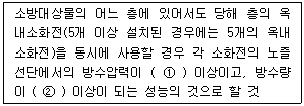
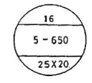
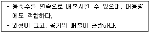
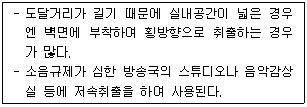
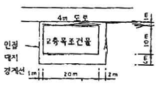
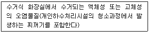

건축설비산업기사 (2008-09-07 기출문제)
1과목: 건축일반
1. 철근콘크리트기둥에서 띠철근(Jle bar)의 가장 주된 역할은?
- 주근의 단면을 보강한다.
- 주근의 좌굴을 방지한다.
- 주근과 콘크리트의 부착력을 증가시킨다.
- 기둥과 접합된 횡좌굴을 방지한다.
(정답률: 74%)

2. 다음 중 호텔의 린넨실의 용도에 대해 옳게 설명한 것은?
- 현관 홀에 접하여 응접용, 대화용 등을 위해 칸막이를 설치하지 않은 장소이다.
- 화물 엘리베이터가 설치되는 장소이다.
- 숙박객의 세탁물을 수납하는 장소이다.
- 숙박객의 물건도난방지를 위해 설치해 놓은 장소이다.
(정답률: 100%)
3. 콘크리트 타설과정에서 이어붓기를 할 때 보 및 바닥판의 이어붓기 위치로 알맞은 곳은?
- 보 및 바닥판의 단부
- 스팬의 1/4 지점
- 스팬의 1/3 지점
- 스팬의 1/2 지점
(정답률: 67%)
4. 주거계획의 기본방향에 관한 설명 중 옳지 않은 것은?
- 생활의 쾌적성 증대
- 가사노동의 경감
- 입식에서 좌식으로의 전환
- 가족 본위의 주거
(정답률: 93%)
5. 다음 중 주택의 거실에 대한 설명으로 옳지 않은 것은?
- 정원과의 시각적 연결을 통한 제한된 공간에서의 효과적인 계획이 가능하다.
- 전체 주택 공간의 중심적인 위치에 있어야 한다.
- 평면배치를 할 때 거실로 통로를 활용해야 공간의 효율성을 높일 수 있다.
- 남향이 적당하며, 통풍이 잘 되는 곳이어야 한다.
(정답률: 93%)
6. 다음 중 강구조의 고력볼트 접합에 대한 설명으로 옳지 않은 것은?
- 고력볼트 접합에는 마찰접합, 인장접합 등이 있다.
- 마찰저항력은 고력볼트에 도입된 축력과 접합면 사이의 마찰계수로 결정된다.
- 볼트 조임은 토크렌치, 임펙트렌치 등으로 한다.
- 볼트와 부재간 이격거리 발생을 줄이기 위해 볼트는 한 번에 끝까지 조이는 것이 좋다.
(정답률: 100%)
7. 호텔의 기준층 평면계획에 관한 설명 중 옳지 않은 것은?
- 기준층의 객실 수는 기준층의 면적이 기둥간격의 구조적인 문제와 관련이 있다.
- 하나의 객실 폭을 기준으로 하여 최소 기둥간격을 정하는 것이 적절하다.
- 객실의 크기와 종류는 건물의 단부와 층으로 차이를 둘 수 있다.
- 동일 기준층에 필요한 실로는 서비스실, 배선실, 엘리베이터, 계단실 등이 있다.
(정답률: 59%)
8. 고층건물의 구조설계에 관한 다음 설명 중 옳지 않은 것은?
- 건축물의 각층에서 하중의 중심과 강성의 중심은 가능한 한 일치하도록 계획함이 좋다.
- 평면형은 불규칙한 형태를 피하고 가능한 단순한 형상으로 함이 바람직하다.
- 건축물의 고유주기는 거의 층수에 반비례한다.
- 횡력저항시스템 중의 하나인 아웃리거시스템은 코어와 외부기둥 사이에 트러스 형태로 구성된다.
(정답률: 알수없음)
9. 사무소 건축에서 엘리베이터 대수 산정의 필요조건으로 가장 거리가 먼 것은?
- 이용 인원수
- 건물의 성격
- 대실면적
- 건물의 구조
(정답률: 59%)
10. 다음 중 건축구조의 시공상 분류에 있어 습식구조에 속하지 않는 것은?
- 철큰콘크리트구조
- 벽돌구조
- 시멘트블록구조
- 철골구조
(정답률: 65%)
11. 사무소 건축의 코어에 대한 다음 설명 중 옳지 않은 것은?
- 각 사무실에서 공용으로 사용되는 공간을 집약하여 두면 편리하다.
- 공조, 전기배선의 덕트는 여기에 포함하지 않는 것이 좋다.
- 코어벽을 내진벽으로 처리하여 안전한 구조물을 구성한다.
- 코어 부분에 계단, 엘리베이터, 화장실은 가능한 근접시킨다.
(정답률: 83%)
12. 다음 중 철골 용접접합부의 결함부위를 검사하는 비파괴검사 방법이 아닌 것은?
- 방사선투과검사
- 초음파탐상검사
- 개선정도검사
- 자기분말탐상검사
(정답률: 88%)
13. 아스팔트 방수공사에서 가장 먼저 사용되는 재료는?
- 아스팔트 프라이머
- 아스팔트 루핑
- 아스팔트 펠트
- 아스팔트 컴파운드
(정답률: 74%)
14. 종합병원건축의 클로즈드 시스템의 계획상 요정에 대한 설명 중 옳지 않은 것은?
- 외과계통 각과는 소 진료실을 다수 설치하도록 한다.
- 외래규모 산정시 보통 병상수의 2~3배의 환자를 1일 환자수로 예상한다.
- 중앙주사실, 회계, 약국 등은 정면 출입구 근처에 설치한다.
- 동선을 체계화하고 대기공간을 통로공간과 분리해서 대기실을 독립적으로 배치한다.
(정답률: 94%)
15. 백화점 매장에 에스컬레이터를 설치하는 위치로 가장 적합한 곳은?
- 주 출입구로부터 멀고 고객의 시선이 닿지 앟는 곳
- 매장의 모서리 깊숙한 곳
- 매장 한쪽 측면
- 주출입구와 승강기와의 중간
(정답률: 86%)
16. 철골구조의 조립판보에 관한 다음 설명 중 옳지 않은 것은?
- 웨브 플레이트가 좌굴하는 것을 방지하기 위해 스티프너를 설치하기도 한다.
- 하중에 대해 임의의 크기로 자유로이 제작하기가 어렵다.
- 제작시 플래지와 웨브의 이음부분은 대부분 용접으로 접합한다.
- 보의 웨브부분에 구멍을 뚫어 설비배관이 지나가게 한 보를 하니컴보라 한다.
(정답률: 67%)
17. 학교운영방식 중 플래툰형(platoon type)에 대한 설명으로 가장 적당한 것은?
- 전 학급을 보통교실군과 특별교실군으로 반씩 나누어 학습을 행하고 일정시간 후에 이동하고 교대하는 방식이다.
- 전 교과를 각 학급교실에서 행하는 방식으로 개개의 교실은 전 교과에 대응 가능한 공간과 설비가 필요하다.
- 일반교실이 각 학급에 하나씩 배당되고 그 외에 특별교실을 가진다.
- 전 교과에 대해서 전용의 교과교실을 설치하고 보통교실, 종합교실은 설치하지 않고 학생은 시간불할에 따라 각 교실을 이동하는 방식이다.
(정답률: 84%)
18. 철골조에서 기둥과 기둥의 접합에 대한 설명으로 옳지 않은 것은?
- 주로 볼트로 접합을 하여 볼트는 일반볼트를 사용한다.
- 윗기둥과 아랫기둥의 크기가 서로 다를 때에는 보통 끼움판으 설치하고 접합한다.
- 용접 접합시 완전 용입을 위하여 철골의 단면에 각도를 주어 절단한다.
- 슬래브 상단 1~1.5m 정도에서 이음을 하는 것이 좋다.
(정답률: 79%)
19. 서고의 공조 및 조명에 대한 기술로 옳지 않은 것은?
- 통로를 충분히 조명하고, 눈이 부시지 않게 할 것
- 독립된 서고는 기계환기설비를 필수적으로 설치 할 것
- 자연채광을 이용할 것
- 도서를 열람하거나 찾을 경우에 그림자가 생기지 않도록 할 것
(정답률: 95%)
20. 백화점 건축의 기둥간격 결정과 가장 거리가 먼 것은?
- 지하 주차장의 주차폭
- 매장의 면적
- 쇼 케이스 치수
- 에스컬레이터의 크기
(정답률: 50%)
2과목: 위생설비
21. 경질 염화 비닐관에 대한 설명 중 옳지 않은 것은?
- 금속관에 비해 산, 알칼리에 약하다.
- 금속관에 비해 전기 절연성이 크다.
- 금속관에 비해 온도변화로 인한 신축이 크다.
- 금속관에 비해 열에 약하다.
(정답률: 78%)
22. 물의 온도상승에 따른 밀도의 차에 의해 온수를 순환시키는 급탕순환방식은?
- 중력식
- 강제식
- 단관식
- 복관식
(정답률: 85%)
23. 배수관의 관경에 대한 설명 중 옳지 않은 것은?
- 배수관의 최소 관경은 40mm 이상으로 한다.
- 기구배수관의 관경은 이것에 접속하는 위생기구의 트랩 구경 이상으로 한다.
- 배수 수평지관의 관경은 이것에 접속하는 기구배수관의 최대관경 이상으로 한다.
- 배수관은 배수의 유하방향으로 관경을 축소하지 않도록 한다.
(정답률: 80%)
24. 급수설비 저수조와 고가수조에 대한 설명으로 옳지 않은 것은?
- 저수조의 보유수량은 일반적으로 1일 사용수량의 1/2 정도로 한다.
- 고가수조의 용량은 양수펌프의 양수량과 상호관계가 있다.
- 저수조는 수질 오염에 대한 고려가 필요하다.
- 고가수조는 급수방식 중 압력수조방식에 주로 사용된다.
(정답률: 27%)
25. 배관 속의 유체에 섞여 있는 모래, 쇠부스러기 등의 이물질을 제거하기 위해 설치하는 것은?
- 유니온
- 볼 탭
- 캡
- 스트레이너
(정답률: 94%)
26. 대변기 세벙수의 급수방식에 속하지 않는 것은?
- 로 탱크식
- 하이 탱크식
- 플러시 밸브식
- 사이폰 제트식
(정답률: 80%)
27. 다음의 옥내소화전설비의 가압송수장치에 관한 기준 내용 중 ( ) 안에 알맞은 것은?

- ① 0.17 MPa, ② 260 ℓ/min
- ① 0.34 MPa, ② 260 ℓ/min
- ① 0.17 MPa, ② 130 ℓ/min
- ① 0.34 MPa, ② 130 ℓ/min
(정답률: 82%)
28. 국소식 급탕방식과 비교한 중앙식 급탕방식의 특징에 대한 설명 중 옳지 않은 것은?
- 일반적으로 열원장치는 공조설비와 경용하여 설치되기 때문에 열원단가가 싸다.
- 시공 후, 기구 증설에 따른 배관 변경 공사를 하기 여럽다.
- 급탕개소가 적기 때문에 설비규모가 작고 열손실이 적다.
- 배관에 의해 필요개소에 어디든지 급탕할 수 있다.
(정답률: 53%)
29. 슬리브형 신축이음쇠에 대한 설명으로 옳지 않은 것은?
- 신축량이 크고 신축으로 인한 응력이 생기지 않는다.
- 배관에 곡선 부분이 있으면 신축 이음쇠에 비틀림이 생겨 파손의 원인이 된다.
- 루프형 신축 이음쇠에 비해 설치 공간을 많이 차지한다.
- 장시간 사용시 패킹의 마모로 누수의 원인이 된다.
(정답률: 67%)
30. 호텔의 주방이나 레스토랑의 주방 등에서 배출되는 세정 배수 중의 유지분을 포집하기 위해 사용하는 포집기는?
- 헤어 포집기
- 오일 포집기
- 플라스터 포집기
- 그리스 포집기
(정답률: 94%)
31. 다음의 LN가스에 대한 설명 중 옳지 않은 것은?
- 액화천연가스를 의미한다.
- 메탄을 주성분으로 한다.
- 공기보다 무겁고 연소시 이론공기량이 많다.
- 대규모 저장시설을 갖추어 배관을 통해서 공급해야 하는 단점이 있다.
(정답률: 79%)
32. 다음 중 배수통기관을 설치하는 목적과 가장 거리가 먼 것은?
- 트랩의 봉수를 보호하기 위하여
- 배수관내의 물의 흐름을 원활하게 하기 위하여
- 배수관의 워터햄머를 방지하기 위하여
- 배수관내의 환기를 위하여
(정답률: 69%)
33. 다음 중 베르누이 방정식과 관계 없는 것은?
- 압력수두
- 속도수두
- 중량수두
- 위치수두
(정답률: 67%)
34. 폐쇄형 스프링클러헤드를 사용하는 설비의 방호구역은 하나의 방호구역의 바닥면적으 최대 어마 이하로 하는 것을 원칙으로 하는가?
- 1500 m2
- 3000 m2
- 4500 m2
- 6000 m2
(정답률: 55%)
35. 다음 중 간접가열식 급탕법에 대한 설명으로 옳은 것은?
- 급탕용 고압 보일러를 사용하여야 한다.
- 대규모 급탕설비에는 사용할 수 없다.
- 저탕조 내면에 스케일의 발생이 심하다.
- 보일러에서 만들어진 증기 또는 고온수를 열워으로 한다.
(정답률: 64%)
36. 기구 소요압력 150kPa, 수도 본관에서 최고층 급수기구까지 높이 5m, 전마찰손실수두압 50kPa 일 때 수도 본관의 최저 필요 압력은?
- 750 kPa
- 700 kPa
- 500 kPa
- 250 kPa
(정답률: 64%)
37. 지하 저수조의 물을 양수능력 200 L/min의 펌프로 양정 10m 인 고가수조에 양수하고자 할 때 펌프의 축동력은? (단, 펌프의 효율은 80% 이다.)
- 0.41 kW
- 0.38 kW
- 0.33 kW
- 0.23 kW
(정답률: 알수없음)
38. 관의 교체 및 수리, 보수를 용이하게 하고, 관의 신축에도 무리가 생기지 않도록 하기 위해 바닥 또는 벽 등을 관통하는 배관에 사용하는 것은?
- 엘보
- 슬리브
- 부싱
- 플러그
(정답률: 82%)
39. 수질과 관련된 용어 중 SS의 의미로 가장 알맞은 것은?
- 부유물질
- 수수이온농도
- 생물화학적 산소요구량
- 용존산소
(정답률: 93%)
40. 다음 중 기구별 최저필요 급수압력이 가장 작은 것은?
- 스툴형 소변기 세정밸브
- 대변기 세정밸브
- 보통 밸브
- 샤워
(정답률: 70%)
3과목: 공기조화설비
41. 다음의 습공기에 대한 설명 중 옳은 것은?
- 습공기를 가열하면 절대습도는 감소한다.
- 습공기를 가열하면 습구온도는 감소한다.
- 습공기를 가습하면 상대습도는 감소한다.
- 습공기를 가습하면 습구온도는 커진다.
(정답률: 57%)
42. 난방부하나 냉방부하 계산을 위해 사용되는 열관류율의 단위로 옳은 것은?
- W/m2·K
- W/m·K
- m2·K/W
- m·K/W
(정답률: 75%)
43. 송풍기의 날개의 형식에 의한 분류에서 원싱형에 속하지 않는 것은?
- 후곡형
- 다익형
- 베인형
- 방사형
(정답률: 47%)
44. 다음 그림과 같은 방열기의 제원 중 표시되어 있지 않은 것은?

- 방열기 쪽수
- 방열기 높이
- 접속 관경
- 방열기 무게
(정답률: 77%)
45. 공기조화방식 중 정풍량 방식과 변풍량 방식에 대한 설명으로 옳은 것은?
- 정풍량 방식은 변풍량 방식에 비해 에너지 절약적이다.
- 변풍량 방식은 정풍량 방식에 비해 설치비가 저렴하다.
- 부하변동이 많은 경우에는 변풍량 방식보다 정풍량 방식이 유리하다.
- 변풍량 방식은 운송동력을 줄일 수 있다.
(정답률: 47%)
46. 길이 20m인 배관 내로 증기가 간헐적으로 흐르고 있다. 증기가 통과 할 때의 관온도가 100℃, 흐르지 않고 있을 때의 관온도가 20℃ 라고 하면, 증기가 통과할 때 늘어나는 길이는? (단, 배관재료의 선팽창계수는 1.2 × 10-5 이다.)
- 19.2 mm
- 25.2 mm
- 29.4 mm
- 34.4 mm
(정답률: 47%)
47. 실내를 항상 정압(+)상태로 유지할 수 있어서 오염된 공기의 침입을 방지하고, 연소용 공기가 필요할 경우 적합한 환기법은?
- 제1종 환기
- 제2종 환기
- 제3종 환기
- 제4종 환기
(정답률: 72%)
48. 환기량이 2500m3/hr 인 경우 환기에 의한 잠열부하는? (단, 외기상태 to = -5℃, Xo = 0.003 kg/kg′, 실내공기상태 tr = 24℃, Xr = 0.012 kg/kg′)
- 10932 W
- 14190 W
- 18765 W
- 23725 W
(정답률: 60%)
49. 다음 중 흡수식 냉동기의 구성요소가 아닌 것은?
- 재생기
- 응축기
- 증발기
- 압축기
(정답률: 69%)
50. 다음 중 펌프에 따른 비교회전수의 크기를 바르게 나타낸 것은?
- 축류펌프 ＞ 사류펌프 ＞ 볼류트펌프 ＞ 터빈펌프
- 터빈펌프 ＞ 볼류트펌프 ＞ 사류펌프 ＞ 축류펌프
- 사류펌프 ＞ 볼류트펌프 ＞ 터빈펌프 ＞ 축류펌프
- 볼류트펌프 ＞ 터빈펌프 ＞ 축류펌프 ＞ 사류펌프
(정답률: 56%)
51. 용량 15kW의 전동기로 작동되는 기계가 있다. 전동기는 실내에 있고 기계는 실외에 있을 경우 실내취득열량은? (단, 전동기 부하율 0.8, 전동기 효율 0.86 이다.)
- 12.9 kW
- 12 kW
- 10.32 kW
- 1.95 kW
(정답률: 34%)
52. 어떤 습공기의 건구온도가 20℃, 절대습도가 0.0072 kg/kg′ 일 때, 이 습공기의 엔탈피는? (단, 건조공기의 정압비열 = 1.01 kJ/kg·K, 0℃에서 포화수의 증발잠열 = 2501 kJ/kg, 수증기의 정압비열 = 1.85 kJ/kg·K)
- 30.70 kJ/kg′
- 38.47 kJ/kg′
- 51.63 kJ/kg′
- 65.54 kJ/kg′
(정답률: 65%)
53. 다음과 같은 특징을 갖는 기계식 증기트랩은?

- 바이메탈 트랩
- 벨로즈 트랩
- 열동식 트랩
- 플로트 트랩
(정답률: 54%)
54. 냉각수 배관에서 다음 중 어느 값이 커지면 직과부의 마찰손실수두[mAq]가 감소되는가?
- 관의 마찰계수
- 관의 길이
- 관의 내경
- 유체의 속도
(정답률: 75%)
55. 다음과 같은 특징을 갖는 축류형 취출구는?

- 노즐형
- 웨이형
- 아네모스탯형
- 라인형
(정답률: 73%)
56. 공조기(AHU)의 예열기가 하는 역할은?
- 난방시 외기의 가열
- 난방시 환기의 가열
- 냉방시 냉각된 공기 가열
- 냉방시 배기와 외기의 열교환
(정답률: 67%)
57. 덕트 내에 흐르는 공기의 풍속이 12m/s 일 경우 동압은 얼마인가? (단, 공기의 밀도는 1.2 kg/m3 이다.)
- 6.8 mmAq
- 7.8 mmAq
- 8.8 mmAq
- 9.8 mmAq
(정답률: 57%)
58. 공기조화방식 중 전수방식(all water system)에 대한 설명으로 옳지 않은 것은?
- 재실인원이 적은 방에 적당하다.
- 넓은 공조실과 덕트스페이스가 필요하다.
- 송풍공기가 없어서 실내공기의 오염이 심하다.
- 열매체가 증기 또는 냉·온수이므로 열의 운송동력이 공기에 비해 적게 소요된다.
(정답률: 48%)
59. 송풍기에 관한 법칙으로 틀린 것은?
- 압력은 회전속도비의 2제곱에 비례하여 변화한다.
- 동력은 회전속도비의 3제곱에 비례하여 변화한다.
- 압력은 송풍기 크기비의 2제곱에 비례하여 변화한다.
- 동력은 송풍기 크기비의 3제곱에 비례하여 변화한다.
(정답률: 48%)
60. 업무용 건물에서 독립된 환기를 하지 않아도 되는 곳은?
- 주차장
- 복도
- 화장실
- 급탕실
(정답률: 74%)
4과목: 건축설비관계법규
61. 그림과 같은 2층 목조건축물에서 연소할 우려가 있는 부분의 외벽길이 합계는? (단, 1층, 2층 바닥면적은 동일함)

- 43 m
- 60 m
- 90 m
- 103 m
(정답률: 36%)
62. 바닥면적이 150 m2인 학교 교실에 채광을 위해 설치하는 창문등의 최소 면적은?
- 5 m2
- 7.5 m2
- 10 m2
- 15 m2
(정답률: 45%)
63. 거실의 용도에 따른 조도기준이 옳지 않은 것은?
- 거주(독서, 식사) - 150룩스
- 집우(설계, 제도) - 700룩스
- 작업(검사, 시험) - 600룩스
- 집회(회의) - 300룩스
(정답률: 46%)
64. 외기에 직접 면하고 1층 또는 지상으로 연결된 출입문을 방풍구졸 하여야 하는 것은?
- 판매 및 영업시설 중 상점으로서 바닥면적 300 m2인 개별 점포의 출입문
- 판매 및 영업시설 중 도매시장으로서 바닥면적 300 m2인 개별 점포의 출입문
- 공동주택의 출입문
- 사람의 통행을 주목적으로 하는 너비 1.5m 의 출입문
(정답률: 47%)
65. 피난설비에 관한 기준 내용으로 옳은 것은?
- 인명구조기구는 층수가 5층 이상인 관광호텔에 설치하여야 한다.
- 지하구의 경우에는 피난구유도등 및 통로유도등을 설치하지 않을 수 있다.
- 층수가 5층 이상 또는 연면적 2,000m2 이상인 건축물에는 비상조명등을 설치하여야 한다.
- 피난기구는 지상1층, 지상2층에는 반드시 설치하여야 한다.
(정답률: 40%)
66. 주요구조부를 내화구조로 하여야 하는 건축물은?
- 종교시설의 용도에 쓰이는 건축물로서 집회설의 바닥며적의 합계가 100m2 인 건축물
- 위험물저장 및 처리시설의 용도에 쓰이는 건축물로서 그 용도에 쓰이는 바닥면적의 합계가 500m2인 건축물
- 공장의 용도에 쓰이는 건축물로서 그 용도에 사용하는 바닥면적의 합계가 1,500m2인 건축물
- 창고시설의 용도에 쓰이는 건축물로서 그 용도에 쓰이는 바닥면적의 합계가 300m2인 건축물
(정답률: 70%)
67. 비상용 승강기를 설치하여야 하는 건축물의 높이 기준은?
- 25 m 이상
- 31 m 이상
- 41 m 이상
- 55 m 이상
(정답률: 95%)
68. 건축법령에 따라 설치하여야 하는 배연설비에 관한 기준 내용으로 옳지 않은 것은?
- 건축물에 규정에 의해 방화구획이 설치된 경우에는 그 구획마다 1개소 이상의 배연창을 설치할 것
- 배연창의 유효면적은 0.5 m2 이상으로 그 면적의 합계가 당해 건축물의 바닥면적의 100분의 1 이상일 것
- 배연구는 연기감지기 또는 열감지기에 의하여 자동으로 열 수 있는 구조로 하되, 손으로도 열고 닫을 수 있도록 할 것
- 배연구는 예비전원에 의하여 열 수 있도록 할 것
(정답률: 50%)
69. 건축물에 설치하는 지하층의 구조에 관한 기준 내용으로 옳지 않은 것은?
- 거실의 바닥면적의 합계가 1,000 m2 이상인 층에는 환기설비를 설치할 것
- 지하층의 바닥면적이 300 m2 이상인 층에는 식수공급을 위한 급수전을 1개소 이상 설치할 것
- 주택의 경우를 제외하고 비상탈출구의 유효너비는 1.5m 이상으로 할 것
- 주택의 경우를 제외하고 비상탈출구는 출입구로부터 3m 이상 떨어진 곳에 설치할 것
(정답률: 34%)
70. 다음 중 건축법에서 정의하고 있는 건축에 해당하지 않는 것은?
- 증축
- 재축
- 이전
- 대수선
(정답률: 75%)
71. 공동주택의 경우 건축허가 신청시 에너지 절약계획서를 제출하여야 하는 최소 규모는? (단, 기숙사 제외)
- 50 세대
- 100 세대
- 200 세대
- 300 세대
(정답률: 42%)
72. 다음 중 건축법상 건축물의 주요구조부에 해당되지 않는 것은?
- 내력벽
- 기둥
- 옥외 계단
- 주계단
(정답률: 72%)
73. 방화관리자를 두어야 하는 특정소방대상물로서 1급 방화관리대상물의 연면적 기준은?
- 5,000 m2 이상
- 10,000 m2 이상
- 15,000 m2 이상
- 20,000 m2 이상
(정답률: 57%)
74. 다세대주택의 난방설비를 개별난방방식으로 하는 경우에 대한 기준 내용으로 옳지 않은 것은?
- 보일러를 설치하는 곳과 거실사이의 경계벽은 출입구를 제외하고 내화구조의 벽으로 구획할 것
- 보일러의 연도는 방화구조로서 개별연도로 설치할 것
- 보일러실의 윗부분에는 그 면적이 0.5제곱미터 이상인 환기창을 설치할 것
- 기름보일러를 설치하는 경우에는 기름저장소를 보일러실 외의 다른 곳에 설치할 것
(정답률: 50%)
75. 건축물의 냉방설비에 대한 설치 및 설계기준상 심야시간에 얼음을 제조하여 축열조에 저장하였다가 기타시간에 이를 녹여 냉방에 이용하는 냉방설비로 정의되는 것은?
- 빙축열식 냉방설비
- 수축열식 냉방설비
- 장열축열식 냉방설비
- 전체축냉방식
(정답률: 74%)
76. 소방시설 설치유지 및 안전관리에 관한 법령에 따른 피난층의 정의로 가장 알맞은 것은?
- 지상 1층
- 지상 2층 이상의 층
- 지상으로 통하는 직통계단이 있는 층
- 곧바로 지상으로 갈 수 있는 출입구가 있는 층
(정답률: 80%)
77. 하수도법상 다음과 같이 정의되는 용어는?

- 하수
- 오수
- 중수
- 분뇨
(정답률: 43%)
78. 특정소방대상물이 지하가 중 터널인 경우, 옥내소화전설비를 설치하여야 하는 규모 기준은?
- 길이 1천미터 이상
- 길이 5백미터 이상
- 연면적 3천제곱미터 이상
- 연면적 2천제곱미터 이상
(정답률: 84%)
79. 다음 중 건축물을 건축하는 경우 국토해양부령이 정하는 구조기준 및 구조계산에 따라 그 구조의 안전을 확인하여야 하는 대상 건축물에 속하지 않는 것은?
- 층수가 3층인 건축물
- 연면적이 1,200 m2인 건축물
- 높이가 10m인 건축물
- 기둥과 기둥 사이의 거리가 15m인 건축물
(정답률: 70%)
80. 다음의 소방시설 중 경보설비에 해당되지 않는 것은?
- 비상방송설비
- 자동화재탐지설비
- 누전경보기
- 무선통신보조설비
(정답률: 64%)